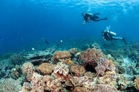

Destinasi Populer
Labengki
Pulau Labengki berada di Kecamatan Lasolo Kepulauan, Kabupaten Konawe Utara, Provinsi Sulawesi Tenggara. Terdapat beberapa pulau kecil di sekelilingnya, yaitu Pulau Bahubulu dan Pulau Manal.

Pulau Muna
Pulau Muna Sulawesi Tenggara adalah salah satu daerah yang berada di Provinsi Sulawesi Tenggara. Ibu kota pulau tersebut yaitu Raha. Terletak di kabupaten yang berada pada bagian selatan dari garis khatulistiwa.

Hoga Kaledupa
Pulau Hoga Kaledupa Wakatobi merupakan salah satu kepulauan Wakatobi yang memiliki keindahan yang mendunia. Para wisatawan yang berkunjung dari mancanegara kebanyakan Eropa dan Amerika.
Pantai Tengkera
Pantai Tengkera menjadi salah satu destinasi wisata yang ada di Kabupaten Konawe Kepulauan (Konkep) yang berada di Kecamatan Wawonii Tenggara.